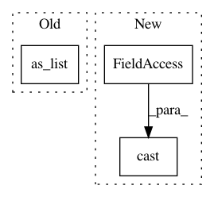

c4fc047e7ec71daa6aa8f71e9cc2ee9e5a3768b6,onnx_tf/handlers/backend/split.py,Split,_common,#Any#Any#,26
Before Change
@classmethod
def _common(cls, node, **kwargs):
tensor_dict = kwargs["tensor_dict"]
x_shape = tensor_dict[node.inputs[0]].get_shape().as_list()
attrs = copy.deepcopy(node.attrs)
axis = attrs.get("axis", 0)
axis = axis if axis >= 0 else len(x_shape) + axis
if "split" in node.attrs:
After Change
raise ValueError("Split can not be evenly divided.")
split = [int(per_part)] * len(node.outputs)
else:
split = [tf.cast(per_part, tf.int32)] * len(node.outputs)
attrs["num_or_size_splits"] = split
return list(
cls.make_tensor_from_onnx_node(
In pattern: SUPERPATTERN
Frequency: 3
Non-data size: 3
Instances
Project Name: onnx/onnx-tensorflow
Commit Name: c4fc047e7ec71daa6aa8f71e9cc2ee9e5a3768b6
Time: 2020-04-14
Author: sdmonov@us.ibm.com
File Name: onnx_tf/handlers/backend/split.py
Class Name: Split
Method Name: _common
Project Name: tensorflow/models
Commit Name: 130786019b6d38681b429c3544bbb5584e21f675
Time: 2020-08-05
Author: syiming@umich.edu
File Name: research/object_detection/meta_architectures/faster_rcnn_meta_arch.py
Class Name: FasterRCNNMetaArch
Method Name: _compute_second_stage_input_feature_maps
Project Name: tensorflow/tpu
Commit Name: 0cbbbf8468781d1558431a22fd244ed143115588
Time: 2020-04-15
Author: gardener@tensorflow.org
File Name: models/official/detection/modeling/architecture/nn_ops.py
Class Name:
Method Name: pyramid_feature_fusion